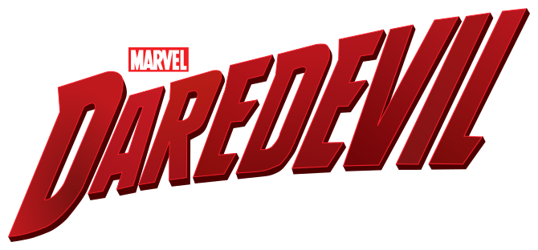
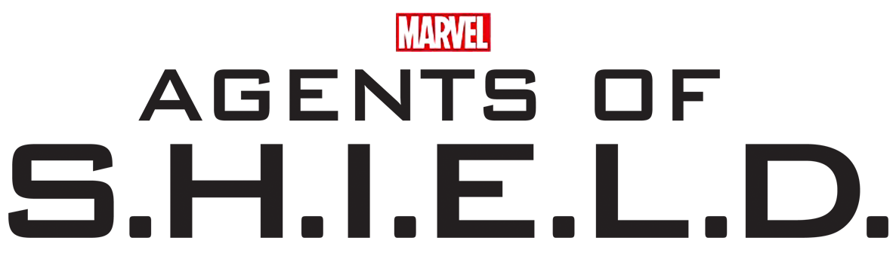

Hell's Kitchen · Harlem · Netflix · ABC · Disney+
Street Level
The Netflix Defenders shows (2015–2019) started out apart from the films. Kingpin in Hawkeye, Matt Murdock in No Way Home, then Daredevil: Born Again and One Last Kill brought them into the MCU. The ABC, Hulu and Freeform shows are here too. Most of them never connect to the films.